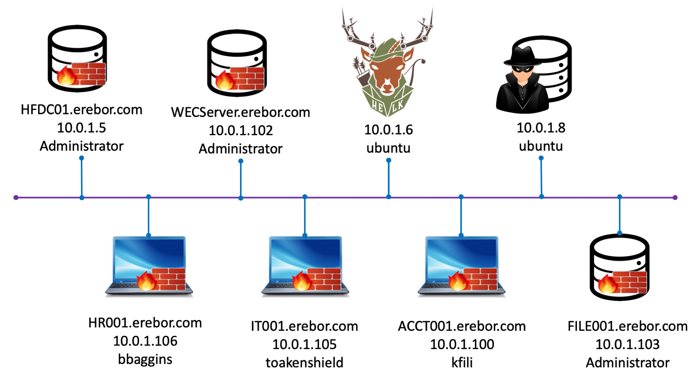
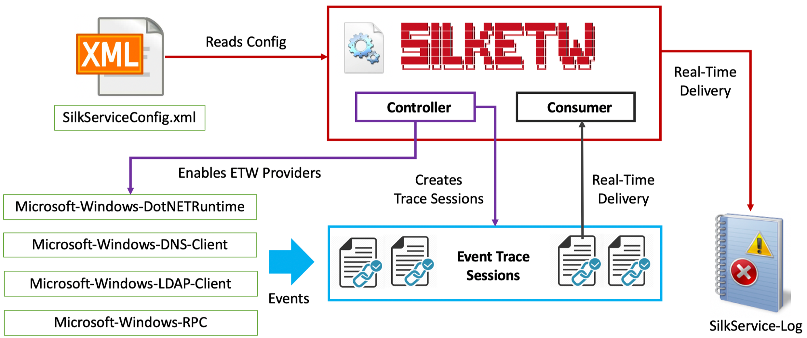

Erebor¶

This mordor environment was designed to replicate a very small network with the essential devices to colllect information from adversarial activities. This environment is a Windows environment with SilkETW running on every endpoints to collect ETW telemetry via the event log.
Network Design¶

Endpoints To Users¶
Platform |
Version |
Purpose |
FQDN |
IP Address |
Main User |
|---|---|---|---|---|---|
Windows |
Win 2019 |
DC |
HFDC01.erebor.com |
10.0.1.5 |
Administrator |
Windows |
Win 10 |
Client |
HR001.erebor.com |
10.0.1.106 |
bbaggins |
Windows |
Win 10 |
Client |
IT001.erebor.com |
10.0.1.105 |
toakenshield |
Windows |
Win 10 |
Client |
ACCT001.erebor.com |
10.0.1.100 |
kfili |
Windows |
Win 2019 |
Log Collector |
WECServer.erebor.com |
10.0.1.102 |
Administrator |
Windows |
Win 2019 |
File Server |
FILE001.erebor.com |
10.0.1.103 |
Administrator |
Linux |
Ubuntu 18 |
Data Analysis |
HELK |
10.0.1.6 |
ubuntu |
Linux |
Ubuntu 18 |
Red Team C2 |
RTO |
10.0.1.8 |
ubuntu |
Windows Users Information¶
FirstName |
LastName |
Sam |
Department |
JobTitle |
Password |
Identity |
|---|---|---|---|---|---|---|
Bilbo |
Baggins |
bbaggins |
Human Resources |
HR Director |
MyPr3c10us! |
Users |
Thorin |
Oakenshield |
toakenshield |
IT Support |
CIO |
Dur1ngsK1ng! |
Domain Admins |
Kili |
Fili |
kfili |
Accounting |
VP |
T0d@y!2019 |
Users |
Silk |
Etw |
silksvc |
IT Support |
Service Account |
Fr33T3l3m3try! |
Users |
Administrator |
Administrator |
P1ls3n! |
Users |
HELK User Informatiom¶
You can update the HELK’s password in the HELK’s paramaters file used to deploy the environment. This file is hosted by the project Blacksmith since it is the official repo for all the templates used to deploy every mordor environment.
Default Username: helk
Default Password: hunt1ng!
Data Sources Collected¶
SilkETW Service Config:
https://github.com/OTRF/Blacksmith/blob/master/aws/mordor/cfn-files/configs/erebor/erebor_SilkServiceConfig.xml
I put together the image below to show you how SilkETW leverages the ETW model to enable ETW events for collection, filtering and ingestion via the event log.

It reads the contents of the provided SilkServiceConfig.xml config to identify the ETW providers it needs to enable and with what filters.
It enables the ETW providers defined in the config file.
It creates event trace sessions and subscribes them to the ETW providers
It consumes events from the event trace sessions in real time
It writes consumed events to the SilkService Log event log in real time